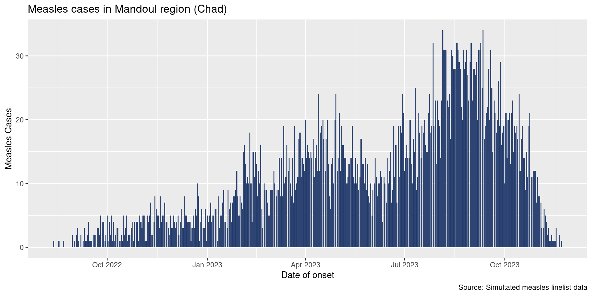
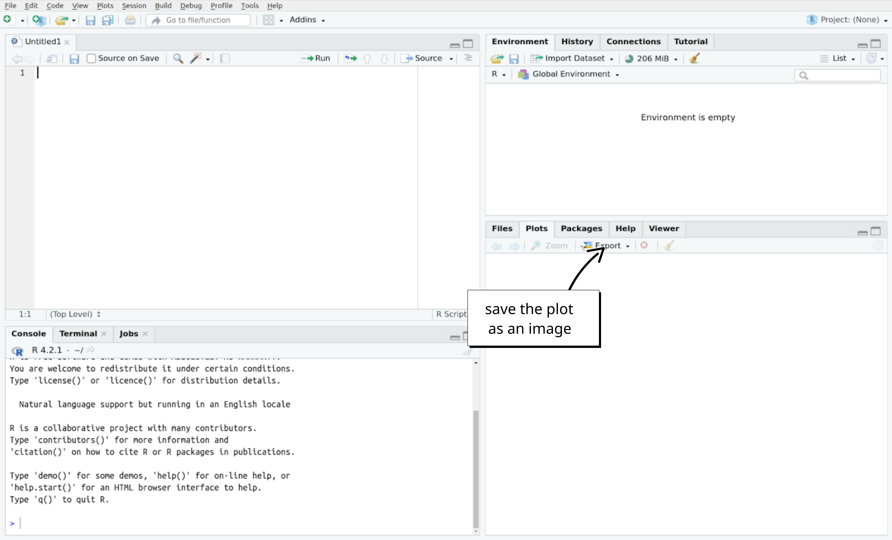

Basic Data Visualization
Core
Visualization
Learn the basics of buidling plots with ggplot2, and create your first epicurve
Objectives
- Grasp the very basics of data visualization in R using
{ggplot2} - Build a basic epicurve
Introduction
This session is a short introduction to data visualization using the popular {ggplot2} package. Keep in mind that visualization in general and even {ggplot2} in particular are huge subjects that we can’t cover in a single core session. This tutorial is intended as a taster to give you a feel for how plotting is typically done. To do that, we will come back to one of our most beloved epidemiological plots: the epicurve.
Our final plot will look like this:
Setup
Dependencies. This session assumes that you know how to use RStudio that you are able to import data and that you know th basic data handling verbs that we have seen in the core sessions so far. If you need a refresher on either of these topics, we encourage you to review the core sessions in the learning pathway.
This session will use the clean version of the Moissala measles linelist data.
Open your RStudio project and create a new script called epicurves.R with appropriate metadata. Load the following packages: {here}, {rio}, {dplyr}, {lubridate}, and {ggplot2}. Add a section to your script called # IMPORT DATA where you import the clean course dataset (moissala_linelist_clean_EN.rds).
Paradigms of Plotting
In R, and indeed in everything, there are a lot of ways to approach data visualization. Two of the biggest paradigms are :
The All-In-One: this approach is characterized by having a single, typically somewhat complex, function that handles all aspects of building a plot. Base R as well as a variety of specialized packages tend to use this approach.
Layered (or modular): here, instead of creating a plot with a single function, we will use separate functions to add (or modify) different features of a plot (such as the primary shapes, labels, error bars, themes, etc). This is the strategy used by packages like
{ggplot2},{highcharter}, or{echarts4r}.
An in depth discussion of why one might use one approach versus another is beyond the scope of this course, though we will note that most modern visualization packages tend to use a layered model. With that in mind, let’s take a look at the types of layers we are talking about in our “layered” approach.
Breaking it Down: A Visualization and its Parts
For the purpose of this tutorial we will talk about only four visualization components (layers):
- Canvas / Data
- Primary Shapes
- Labels
- Theme
To illustrate these components, let’s look at a basic schematic of an epicurve:

The most conceptually complex of the above layers is probably the canvas itself. Much as an artist needs to buy a canvas and conceptualize what they want to paint before they start painting, so too does a user of {ggplot2}. Creating the canvas is where we tell R that we want to start making a plot and what parts of the data that plot will use. Here, for example, we will tell R “I want to make a plot where the x axis represents dates (or weeks sometimes) and the y axis represents cases”. Once that canvas is set up we can start adding other layers in the same way that an artist would begin adding paint, their signature, or a frame.
Now, let’s look at the syntax for these layers in {ggplot2} and how to put them together.
Getting Started with {ggplot2}
The method of building a ggplot is relatively simple and takes the form:
- Create a canvas using a duo of functions
ggplot(aes(...)) - Add things to the canvas
{ggplot2} takes the idea of “adding something to the canvas” very literally: each new layer will be introduced to your plot using the + sign.
The general syntax of a ggplot is then:
# DO NOT RUN (PSEUD-CODE)
df |> # pipe in your data
ggplot(aes(x = ..., # step 1: create canvas
y = ...)) +
layer_one(...) + # step 2: add a first layer
layer_two(...) + # step 3: add another layer
... # continue adding layers...The number of layers you add depends on how complex you want your plot to be. In our case, we will be adding three layers to our canvas with the following functions:
# DO NOT RUN (PSEUD-CODE)
df |> # pipe in your data
ggplot(aes(x = ..., # step 1: create canvas
y = ...)) +
geom_col(...) + # step 2: add shapes (bars)
labs(...) + # step 3: add titles
theme_classic(...) # step 4: add a nicer themeWe can update our above schematic of an epicurve with these functions as follows:

Note
Notice that in the above example, our very first line is actually our dataset being piped into the ggplot() function. This makes sense since {ggplot2} needs to know what data you’d like to visualize. But be careful, make sure that this line ends in a pipe (|>) and not in a + sign like t |> he other ones.
In the next part of the tutorial we will go through each of these steps (layers) individually using our course dataset to make your first epicurve.
Building Your First ggplot
Preparing Your Data: Aggregate by Day
Ultimately we would like to plot an epicurve of daily cases. You may have noticed, our current data is daily, but of course several cases may occur on some days. To plot an epicurve we will need to aggregate data by day. Fortunately, you already learned how to summarize data in previous sessions.
Using count(), create a new dataframe called df_cases that summarizes the total number of cases observed per day. The head of this data frame should look like this:
date_onset n
1 2022-08-13 1
2 2022-08-17 1
3 2022-08-18 1
4 2022-08-22 1
5 2022-08-30 2
6 2022-09-01 1Great! Now we are ready to make our epicurve. In the following steps, you’ll be asked to use df_cases to plot a classic epicurve of the number of daily admissions. To demonstrate the functions you’ll be using, I will plot the curve of the number of daily hospitalizations as an example. To do that, I’ve built myself another dataframe, df_outcome, which looks like this:
date_admission patients
1 2022-08-14 1
2 2022-08-25 1
3 2022-09-02 1
4 2022-09-06 1
5 2022-09-09 1
6 2022-09-10 1Set up a Canvas: Initialize a Plot
The first step is creating your canvas by specifying your dataset and the names of the columns you’d like to visualize. This is done using ggplot(aes(...)) with the following syntax:
# DO NOT RUN (PSEUD-CODE)
df_data |>
ggplot(aes(x = x_axis_variable_name,
y = y_axis_variable_name))For an epicurve of hospitalizations, I’d like to plot the days (date_admission) on the x-axis and the number of patients hospitalized (patients) on the y-axis. Let’s update our pseudo-code to do that:
df_hospital |>
ggplot(aes(x = date_admission,
y = patients))Fabulous, take a look at that big beautiful box of potential. This is our empty canvas. In RStudio this plot should show up in the panel on the bottom right of the screen.

Note
Just like with {dplyr}, we write our column names without quotation marks. This is unsurprising as {ggplot2}, like {dplyr}, is a member of the {tidyverse} and therefore uses similar syntax.
Now, you may be wondering what is this aes() function that we’ve nested inside of ggplot()? The short answer is that aes() creates an AESthetic mapping that tells {ggplot2} which columns of our data should be represented by which visual elements of our plot (like the axes, for example).
Aesthetic mappings create a map that defines how data elements (variables) are to be represented by visual elements (like axes, colors, and sizes). For example, here we are mapping the days to the x-axis and the number of patients to the y-axis. We could also imagine, for example, an epicurve where bars are colored based on whether patients lived or died. This would be an example where the variable outcome is being mapped to the visual element of color.
For now it is enough to know that aes() is the place where you will define your x-and y-axis.
Create a new section in your script called # PLOT EPICURVE. Then create an empty canvas for your epicurve using df_cases.
At this point, your plot should look like this:
Excellent! Now let’s add some bars.
Plot the Bars
Now that we have our canvas, it’s time to add some shapes. In {ggplot2}, the shapes plotted on a figure are called geometries. Geometries are the primary visual representation of your data and should feel pretty familiar. A few common types of geometries include:
- Bar Plots (
geom_col()orgeom_bar()) - Histograms (
geom_hist()) - Scatterplots (
geom_point()) - Line Plots (
geom_line()) - Boxplots (
geom_boxplot())
Today, we’re doing epicurves so we are most interested in learning how to make a bar plot. In our case, we will be using geom_col(). Remember that adding a new layer (in this case a geometry) to our ggplot is as simple as using a +, so we can add bars to the epicurve of hospitalized cases in the following way:
df_hospital |>
ggplot(aes(x = date_admission,
y = patients)) +
geom_col()Brilliant! That sure looks like an epicurve to me. Though it does look a bit…grey. If we’d like to update the color of our bars (called the fill), we simply need to add the fill argument to geom_col().
Let’s give it a try:
df_hospital |>
ggplot(aes(x = date_admission,
y = patients)) +
geom_col(fill = "#2E4573")Update your epicurve plot to add bars with the color #E4573.
Your plot should now look like this:
Note
In the {ggplot2} framework, layers must be added to an existing canvas. This means that running geom_col() by itself will not produce any visual output. This, however, makes sense. Continuing with our analogy of ggplots being like paintings, running geom_col() by itself would be like having paint with no canvas to put it on.
Looking good. Now it’s time to make our plot just a bit more informative and just a bit more attractive by adding labels and a nicer theme.
Add Some Labels
A good plot needs some good labeling; n is hardly an informative axis title. Fortunately, {ggplot2} makes adding labels easy with the function labs(). This function will accept a variety of arguments allowing you to add a variety of label/title elements to your plot, for example:
- Axis Titles (
x =andy =) - Plot Title (
title =) - Caption
As for other layers, we can include a label layer by adding labs() to our current plot with the + sign:
df_hospital |>
ggplot(aes(x = date_admission,
y = patients)) +
geom_col(fill = "#2E4573") +
labs(x = "Date",
y = "Daily Patients",
title = "Measles Hospitalizations in Mandoul Region (Chad)")Update your epicurve plot to add some reasonable axis labels and a nice title.
Extra Credit! Try adding a data source using caption.
Your plot might now look like (for example):

Add a Theme
If we wanted to, we could stop here if our goal is to produce an informal plot. Ideally, however, it would be nice to use a somewhat more attractive theme and to increase the text size. To do this, we will add one last layer to our plot: a theme layer. Much like how geometries in {ggplot2} all start with geom_, all themes start with theme_. There are several themes available to you and you can check out what they look like on the {ggplot2} website.
Today, we will use theme_classic(), which offers a simple but elegant output:
df_hospital |>
ggplot(aes(x = date_admission,
y = patients)) +
geom_col(fill = "#2E4573") +
labs(x = "Date",
y = "Daily Patients",
title = "Measles Hospitalizations in Mandoul Region (Chad)") +
theme_classic()Ok, nice. But we’d also like to increase the size of that tiny font. To do that we can adjust the base_size argument:
df_hospital |>
ggplot(aes(x = date_admission,
y = patients)) +
geom_col(fill = "#2E4573") +
labs(x = "Date",
y = "Daily Patients",
title = "Measles Hospitalizations in Mandoul Region (Chad)") +
theme_classic(base_size = 17)That looks better! Keep in mind that the font size needed will depend on what the plot is going to be used for (i.e. a presentation, an informal review, or a final report). Similarly, the exact theme you will want to use is ultimately a subjective choice. While there are guidelines, data visualization is as much an art as a science.
Add one final layer to your plot that adds a theme of your choice with an appropriate base_size.
Save your plot
If you would like to save your epicurve, you can click on the “Export” button in the plot panel of RStudio:

Done!
Very well done team! You have build your first epicurve!
Go Further
Extra Exercises
- Use the
theme_minimal()on one of your graph, with a base size font of 18. - Go to this site, pick a color and update the color of your bars.
Challenge Exercises
- Instead of aggregating by date, count the number of patients by sub-prefecture. Try to adapt your epicurve code to create a barplot of the number of patients by sub-prefecture.
Satellites
Resources
- A full book on using
{ggplot2}
- A whole chapter on epicurves